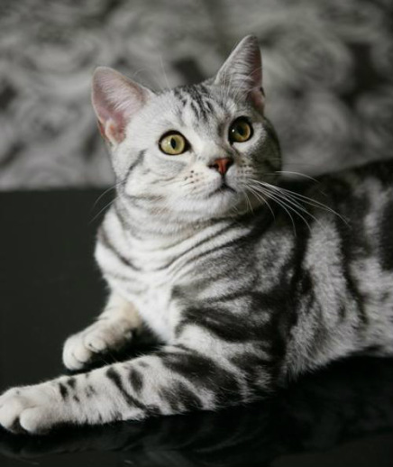

美國短毛貓
美國短毛貓簡稱「美短」，頭部為有點方的圓形，側面有平緩的條紋。
美國短毛貓之起源，可溯自美國殖民時代。
據說美國短毛貓的祖先，和來自英國的拓荒者一併進入美國，幫助捕鼠。後來，美國原住民開始飼養這種貓。由於北美洲氣候惡劣，為了在陰寒、雨天等環境求生，此貓便具有厚胸、粗頸、結實的半短身型體型，且體毛稍硬，形成稠密厚皮。
除了狩獵用途外，也可當作玩賞貓。
此貓以銀白色和黑色的古典虎斑聞名，被認可的毛色已超過30種，而且這種虎斑的腋窩的螺旋絞、額頭的M形紋、背上的3條紋路，及肩膀的蝴蝶紋等，一般貓都沒有。